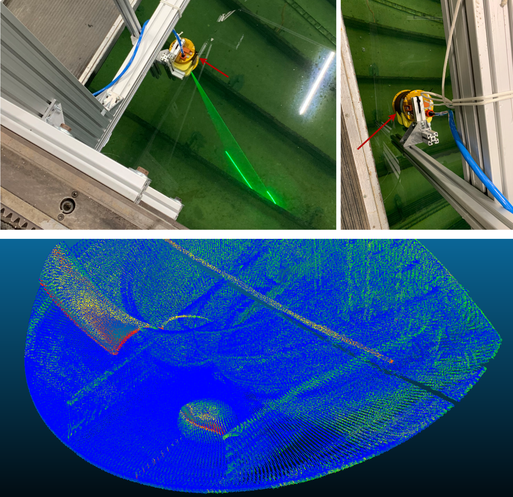
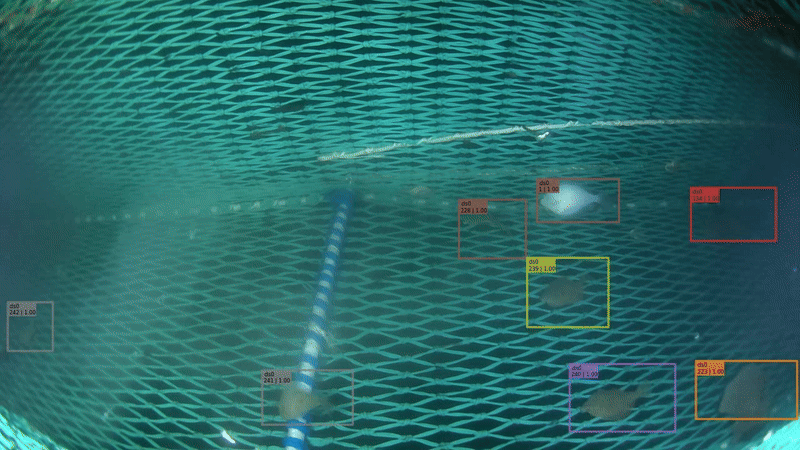
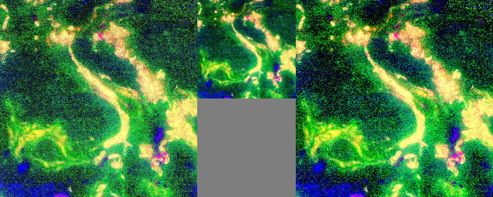

Computer vision systems for real-world data.
I build applied vision models for object detection, segmentation, 3D perception, low-light imagery, point clouds, and efficient deployment.
Research focus
Detection, segmentation and 3D perception
My work focuses on robust models that handle noisy data, domain shift and limited labels.
Selected projects
Project portfolio
3D Instance Segmentation · Wheat head Volume Regression · Wheat phenotyping
3D Instance Segmentation for Plant Phenotyping
We developed a wheat phenotyping system using 3D instance segmentation for detection followed by trait measurement, achieving high accuracy in counting and measuring wheat plants in field conditions.
Open project →
3D Instance Segmentation · Underwater Laser Point Clouds
Instance Segmentation for Underwater Laser Derived Point Clouds
We developed a 3D instance segmentation system to analyze underwater laser derived point clouds, enabling accurate detection and measurement of underwater structures and objects.
Open project →
Object Detection · Pose Estimation · Stereo Matching
CV powered Fish Size Measurement Pipeline
Computer vision pipeline for measuring fish size from underwater stereo camera footage, combining object detection, pose estimation and stereo matching to achieve accurate size estimates for aquaculture fish population monitoring.
Open project →
Object Detection · Multi-Object Tracking
Fish Tracking for Population Dynamics
Pilot project and feasibility study for tracking fish populations in the Baltic Sea using object detection and multi-object tracking techniques.
Open project →
Foundation Models · Self-Supervised Learning · Unsupervised Image Classification
Adapting Foundation Models for Unsupervised Image Classification
We explore the adaptation of large pre-trained vision models for Unsupervised image classification in specialized domain of agricultural fields, demonstrating significant performance improvements without any fine-tuning.
Open project →
Image Super-Resolution · Microscopy Images
Image Super-Resolution for Microscopy Images
We gave a small workshop on image super-resolution by applying it to microscopy images.
Open project →Connect
Find me online
Research
Publications
Wheat3DIS: A Benchmark for 3D Instance Segmentation of Wheat Heads from Point Clouds
Read paper →WheatFormer3D: Segmentation and Phenotyping of Wheat Heads with Transformers
Read paper →On the Feasibility of Transformer-Based 3D Instance Segmentation for Underwater LiDAR Data
Read paper →Comparison of 2D and 3D deep learning strategies for instance segmentation of wheat heads
Read paper →Efficient building segmentation with a lightweight U-Net in high-resolution aerial imagery
Read paper →Bio-Signal Based Multimodal Fusion with Bilinear Model for Emotion Recognition
Read paper →